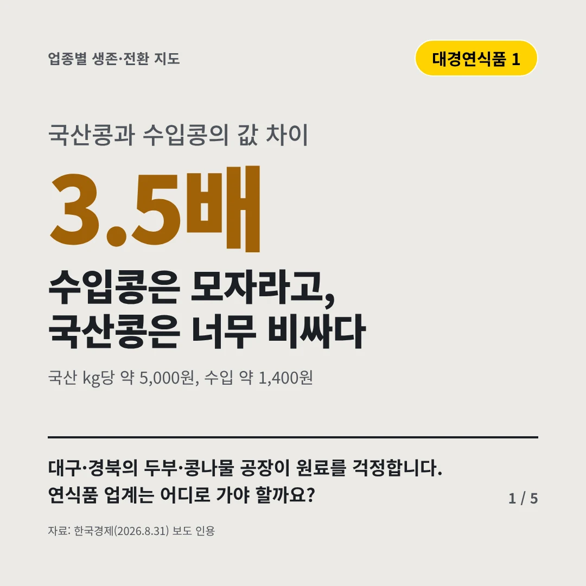
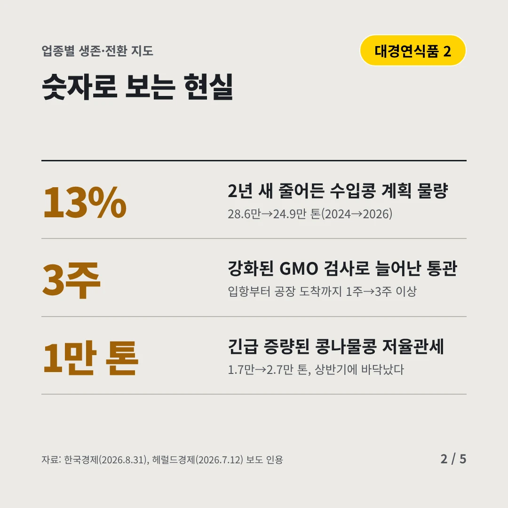
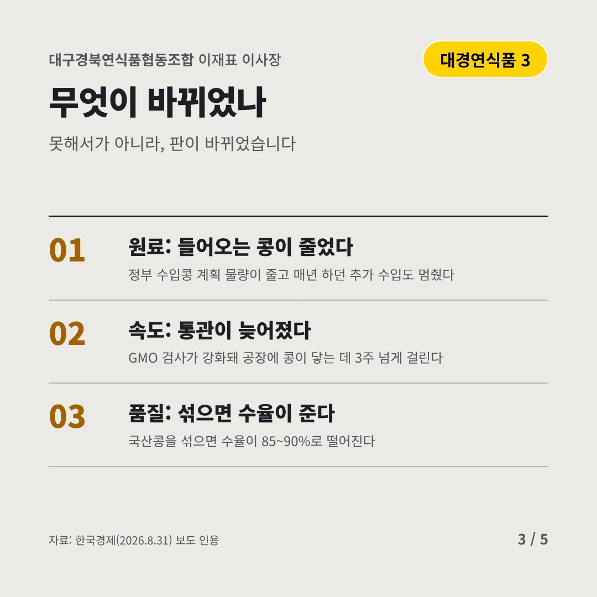
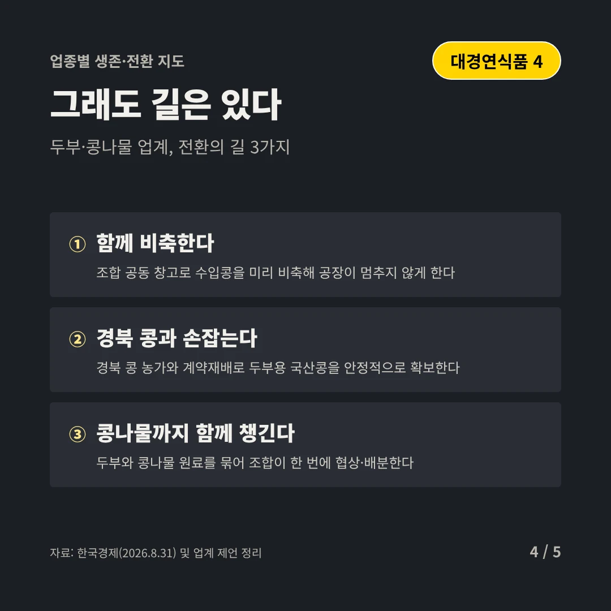
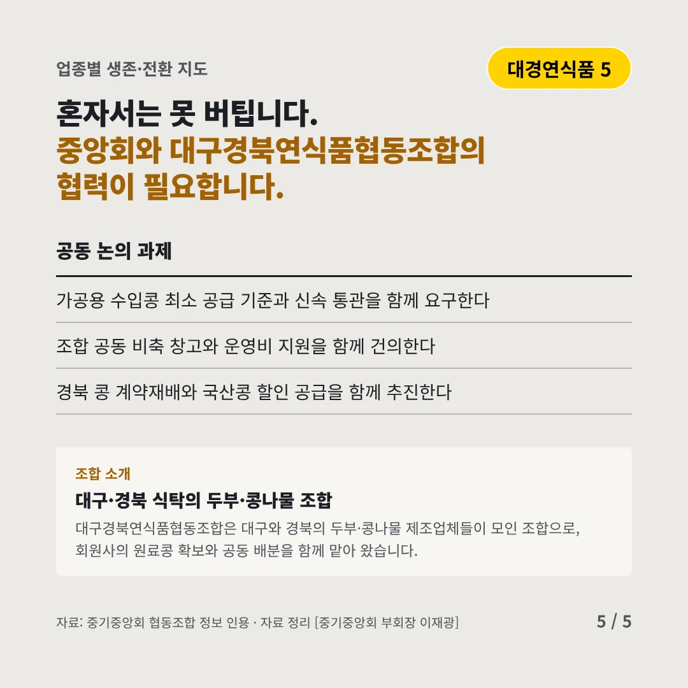
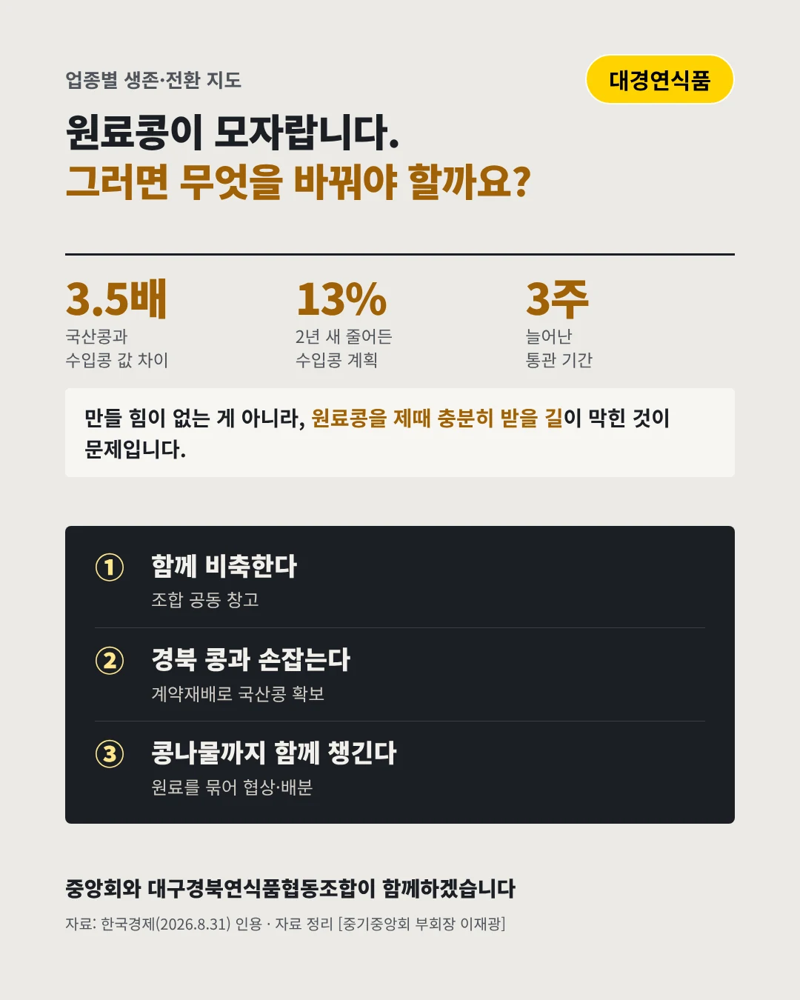

대구경북연식품협동조합
수입콩은 모자라고, 국산콩은 너무 비싸다
3.5배 국산콩과 수입콩의 값 차이






대구·경북의 두부·콩나물 공장이 원료를 걱정합니다. 연식품 업계는 어디로 가야 할까요?
숫자로 보는 현실
- 13%2년 새 줄어든 수입콩 계획 물량28.6만→24.9만 톤(2024→2026)
- 3주강화된 GMO 검사로 늘어난 통관입항부터 공장 도착까지 1주→3주 이상
- 1만 톤긴급 증량된 콩나물콩 저율관세1.7만→2.7만 톤, 상반기에 바닥났다
무엇이 바뀌었나
- 원료: 들어오는 콩이 줄었다정부 수입콩 계획 물량이 줄고 매년 하던 추가 수입도 멈췄다
- 속도: 통관이 늦어졌다GMO 검사가 강화돼 공장에 콩이 닿는 데 3주 넘게 걸린다
- 품질: 섞으면 수율이 준다국산콩을 섞으면 수율이 85~90%로 떨어진다
그래도 길은 있다
- 함께 비축한다조합 공동 창고로 수입콩을 미리 비축해 공장이 멈추지 않게 한다
- 경북 콩과 손잡는다경북 콩 농가와 계약재배로 두부용 국산콩을 안정적으로 확보한다
- 콩나물까지 함께 챙긴다두부와 콩나물 원료를 묶어 조합이 한 번에 협상·배분한다
한 장 요약

조합 소개
대구경북연식품협동조합은 대구와 경북의 두부·콩나물 제조업체들이 모인 조합으로, 회원사의 원료콩 확보와 공동 배분을 함께 맡아 왔습니다.
자료: 한국경제(2026.8.31), 헤럴드경제(2026.7.12)